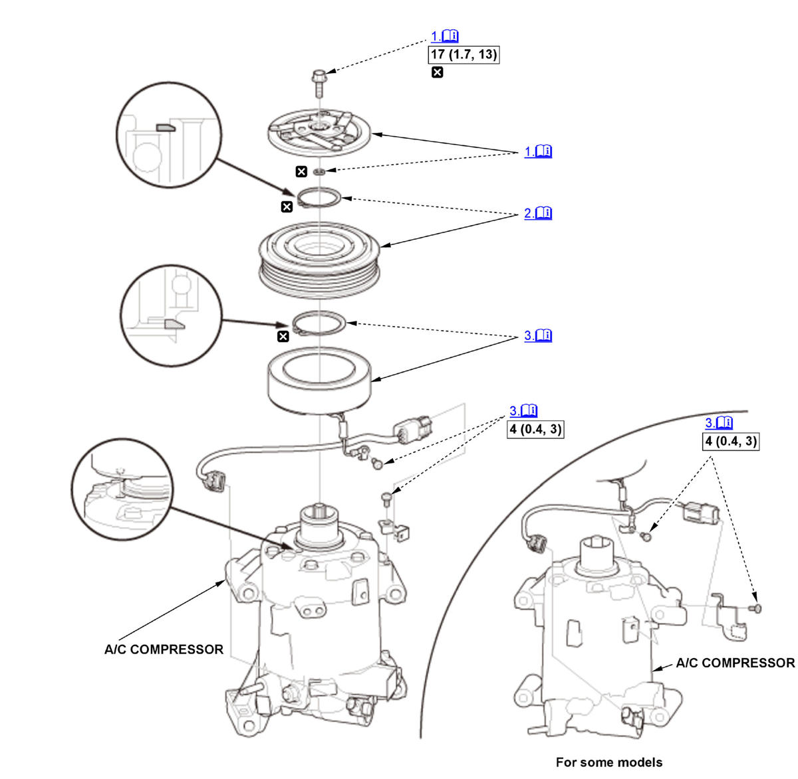

Disassembly and Reassembly: Procedure
NOTE:
Numbered call-outs in figure pertain to list numbers in following procedure.

Courtesy of HONDA, U.S.A., INC. |
Detailed information, notes, and precautions |
 |
Torque: N.m (kgf.m, lbf.ft) |
 |
Replace |
- A/C Compressor Armature Plate - Remove
1. Remove the center bolt (A) while holding the armature plate (B) with the A/C clutch holder (C).
2. Remove the armature plate and the shim(s) (D).
NOTE:
- The shims are available in three thicknesses: 0.3 mm, 0.4 mm, and 0.5 mm.
- Do not pry on the armature plate with screwdrivers or similar tools. Prying damages the armature plate and the pulley.
- Inspect the armature plate and pulley friction surfaces for wear. If there is excessive wear, roughness, or scoring, replace the clutch set.
- If compressor oil is found, replace the A/C compressor .
- A/C Compressor Pulley - Remove
1. Remove the snap ring (A) with the snap ring pliers. 2. Remove the pulley (A).
NOTE:- Do not hammer or pry on the pulley to remove it. Using a hammer damages the A/C compressor. If the pulley is difficult to remove, use a commercially available pulley removing tool. Make sure the jaws of the pulling tool engage the back face of the pulley, not the pulley grooves.
- Be careful not to damage the pulley or the A/C compressor.
- A/C Compressor Field Coil - Remove
1. Remove the snap ring (A) with the snap ring pliers. 2. Remove the field coil (B). Be careful not to damage the field coil or the A/C compressor.
NOTE: Inspect the friction surfaces and the compressor shaft hub for excess oil. If excess oil is present, and it is not from the engine, then the compressor shaft seal is leaking. Replace the A/C compressor .
- All Removed Parts - Install
1. Install the parts in the reverse order of removal, and note these items:
- When replacing the field coil, check that the new coil has the correct resistance .
- Install the field coil with the wire side facing down, and align the boss on the field coil with the hole in the A/C compressor.
- If the clutch surface is oil soaked, check the compressor front seal for leakage. Installing a new clutch assembly on a leaking compressor will damage the new clutch assembly friction surfaces.
- Clean the pulley and the A/C compressor friction surfaces with contact cleaner or other non-petroleum solvent.
- Install new snap rings, note the installation direction, and make sure they are fully seated in the grooves.
- Make sure that the pulley turns smoothly after it's reassembled.
- Route and clamp the wires properly to prevent damage by the pulley.
- After reinstallation, cycle the A/C compressor clutch approximately 20 times by running the engine at 1500-2000 RPM and setting the A/C system to MAX COOL. This procedure seats the clutch sliding surfaces, and increases clutch torque capacity.